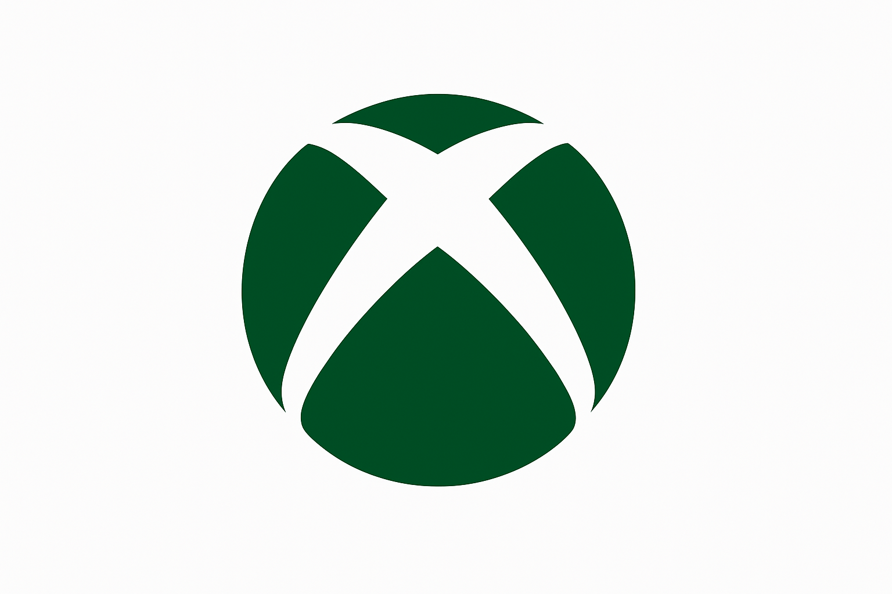
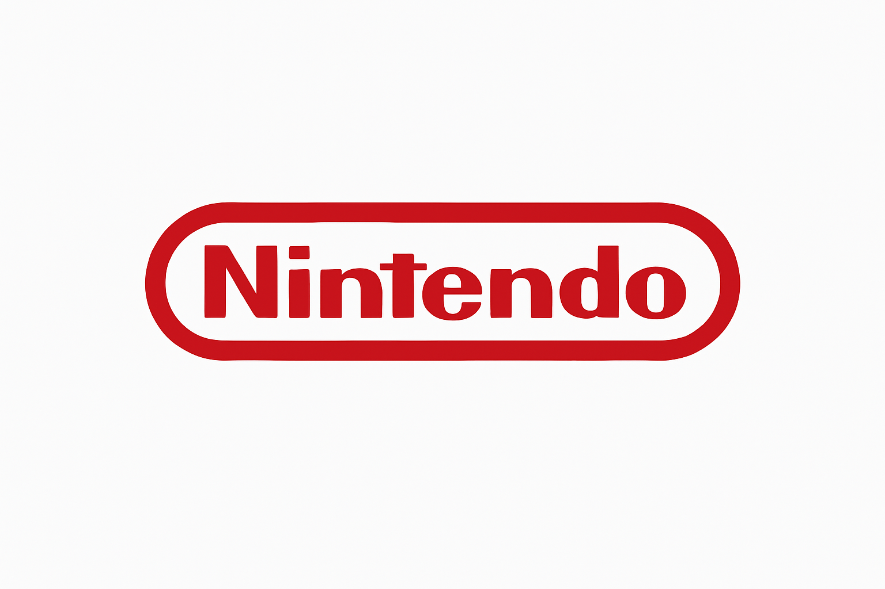

Play Station

Xbox

Nintendo

Productos Disponibles
| Consolas | Descripcion |
|---|---|
| Play Station 2 | La PlayStation 2, lanzada por Sony en 2000, fue una consola revolucionaria por su potencia y compatibilidad con juegos de PS1. Incluía reproductor de DVD y un enorme catálogo con títulos como GTA: San Andreas y God of War. Vendió más de 155 millones de unidades. |
| Xbox 360 | La Xbox 360, lanzada por Microsoft en 2005, marcó una nueva era en el juego en línea gracias a Xbox Live. Destacó por sus potentes gráficos, control ergonómico y un amplio catálogo con títulos como Halo 3 y Gears of War. Vendió más de 85 millones de unidades en todo el mundo. |
| Nintendo Switch | La Nintendo Switch, lanzada en 2017, revolucionó el mercado al combinar consola de sobremesa y portátil en un solo dispositivo. Con juegos icónicos como The Legend of Zelda: Breath of the Wild y Mario Kart 8 Deluxe, ha vendido más de 140 millones de unidades globalmente. |
Consolas
Reseñas
⭐⭐⭐⭐ Compré la PS2 por nostalgia y sigue funcionando de maravilla. Los clásicos como GTA San Andreas y God of War se ven geniales. ¡Una joya que nunca pasa de moda!
⭐⭐⭐⭐ Compré la Xbox 360 y esta padricima. Perfecta para jugar Halo o Gears of War con amigos. Gracias Evo Mike por la experiencia!.
⭐⭐⭐⭐ La Switch es simplemente increíble. Puedo jugar en la tele o llevarla conmigo, los juegos se ven hermosos y la batería dura mucho. ¡10/10!